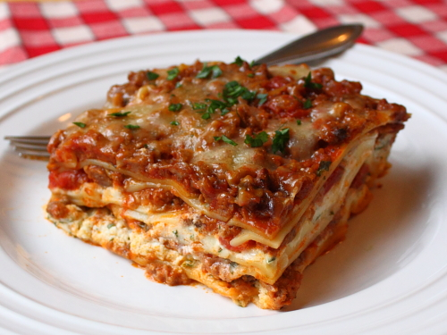

by Chef John
There are only two things you need for great lasagna: a thick, rich, super-meaty meat sauce and lots of it, and a ricotta filling where only the finest cheeses are welcomed. For the sauce, I love a combination of half Italian sausage and half lean ground beef. I also like lots of sauce.
Place sausage and ground beef into a large saucepan over medium heat; cook and stir until meat is browned and crumbly, about 10 minutes. Break the meat apart as it cooks. Stir in mushrooms, 1 teaspoon salt, 1/2 teaspoon black pepper, Italian herb seasoning, and red pepper flakes. Turn heat to medium-high and cook until mushrooms have given off their juices and bottom of pan is almost dry.
Pour prepared marinara sauce into meat mixture. Pour water into marinara sauce jar and shake to get all the sauce out of the jar; add to mixture. Reduce heat to low and simmer until meat is extremely tender, about 2 hours. Add a little more water if sauce becomes too thick. Skim excess fat from surface of the sauce and season with more salt and black pepper, if needed. Turn off heat.
Preheat oven to 375 degrees F (190 degrees C).
Beat eggs in a large bowl and stir in ricotta cheese, 8 ounces diced mozzarella cheese, and 2/3 cup Parmigiano-Reggiano cheese. Season cheese mixture with 1 teaspoon salt, 1/4 teaspoon black pepper, and cayenne pepper; mix in parsley.
Bring a large pot of salted water to a boil. Cook lasagna in the boiling water, stirring occasionally, until cooked through but firm to the bite, about 8 minutes. Drain and rinse noodles and set aside in a bowl of cold water.
Spread 1/4 the sauce into the bottom of a 10x15-inch baking pan. Top with 1/3 of the noodles and spread 1/2 the ricotta cheese mixture over noodles. Spread 1/4 of the meat sauce over the cheese, top with 1/3 of the noodles, and spread remaining 1/2 the ricotta mixture over the noodles. Spread 1/4 of the meat sauce over the cheese filling. Tap the casserole dish lightly on a sturdy work surface to settle the layers. Arrange last 1/3 of the noodles over sauce and spread remaining 1/4 of the sauce over the noodles. Dot top of the casserole with 4 ounces diced fresh mozzarella cheese and sprinkle with 1/2 cup Parmigiano-Reggiano cheese.
Cover casserole with aluminum foil, being sure not to touch the top of the casserole with the foil. Place casserole onto a baking sheet to catch spills.
Bake in the preheated oven for 30 minutes. Remove foil and cook until lasagna is golden brown and bubbling, 30 to 35 more minutes. Let set for 20 minutes before cutting into squares.